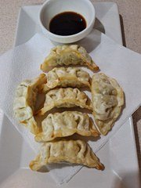
1.군만두Gun mandu (7 szt.)
20 złSmażone pierogi z kurczakiem i warzywami.
Przystawki, zupy, dania z ryżem, grill, smażony kurczak i BBQ party — autentyczna kuchnia koreańska.

Smażone pierogi z kurczakiem i warzywami.
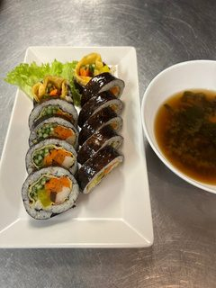
Domowe pierożki na parze z mięsem (wieprzowina i wołowina), tofu, warzywami i makaronem. Czas gotowania: 30 minut.
Smażone krewetki w cieście z mąki pszennej.
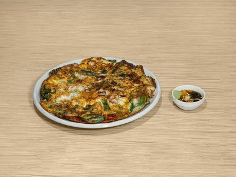
Naleśnik z różnych rodzajów owoców morza wymieszanych z ciastem mącznym.
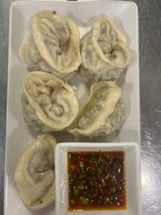
Cienko pokrojona wołowina smażona w cieście jajecznym.
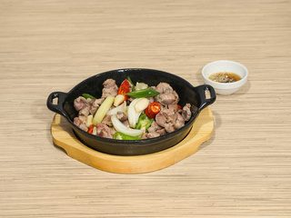
Danie z surowego mięsa wołowego z dodatkiem orzechów piniowych i jajkiem.
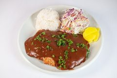
Żołądek kurczaka smażony w głębokim oleju lub na patelni.
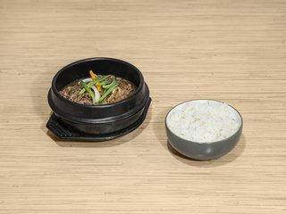
Grillowana makrela.
Plastry bulgogi wołowego z warzywami i makaronem ziemniaczanym w gorącym garnku.
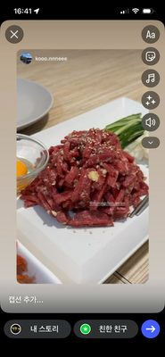
Kotlet schabowy z sosem na górze, daikon, sałatka z ketchupem i majonezem, ryż.
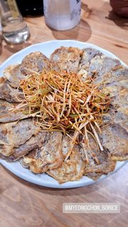
Panierowane filety z dorsza smażone w głębokim tłuszczu, aż będą chrupiące. Podawany z sosem tatarskim.
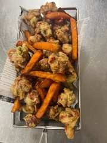
Ciasteczka ryżowe duszone z ostro-słodką pastą gochujang, warzywa, kotleciki rybne, ugotowane jajko.
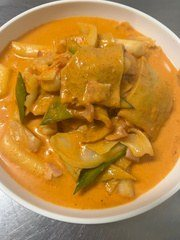
Fusion tteokbokki z sosem pomidorowym, mlekiem, śmietaną i boczkiem, tworząc pikantny sos gochujang.
Gotowany ryż, różne rodzaje warzyw, szynka i surimi, zawinięte w gim, podawane w małych plasterkach.
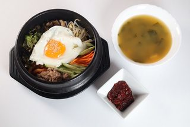
Zupa z pasty sojowej z tofu, warzywami i mostkiem wołowym z ryżem.
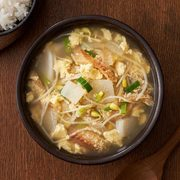
Bogata zupa z pasty sojowej z tofu, warzywami, mostkiem wołowym i ryżem.
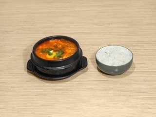
Pikantna zupa z tofu, warzywami, z ryżem.
Zupa kimchi, tofu, boczek wieprzowy lub tuńczyk i warzywa z ryżem.
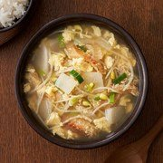
Mielony mintaj gotowany w bulionie z grzybami, kiełkami fasoli, rzodkiewkami.
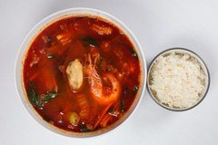
Pikantna zupa z mostkiem wołowym, owocami morza i warzywami z ryżem.
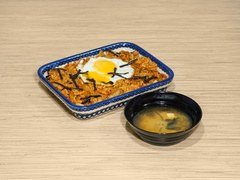
Smażony ryż z kimchi, wieprzowiną i boczkiem.
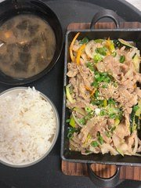
Wieprzowina marynowana w sosie sojowym i grillowana, podawana z ryżem.
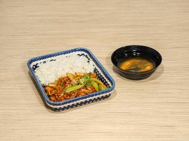
Boczek smażony z warzywami, podawany z ryżem.
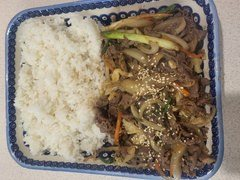
Marynowana wołowina z warzywami, podawana z ryżem.
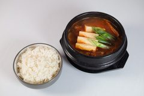
Smażone kalmary, warzywa podawane z ryżem.
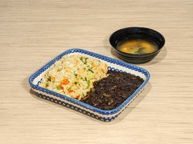
Smażony ryż z warzywami i krewetkami z sosem z pasty z czarnej fasoli.
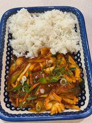
Ryż z warzywami, wołowiną, jajkiem i ostrą pastą chilli.
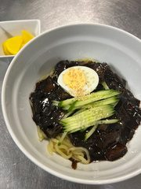
Koreańskie danie z wołowiny, przygotowane z mielonych krótkich żeberek wołowych.
Zupa z kawałków ciasta pszennego gotowanych w bulionie anchois z ziemniakami, dynią.
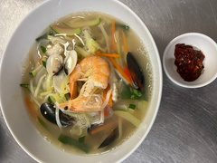
Żeberka wołowe długo gotowane na kości. Gęsty, bogaty bulion i delikatne mięso.
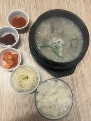
Zupa gotowana na kościach i mięsie wieprzowym z dodatkiem plastrów mięsa.
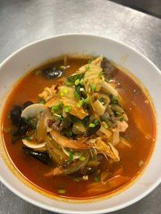
Pikantna zupa z pszenicznym makaronem, owocami morza, mostkiem wołowym i warzywami.
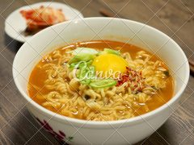
Zupa z różnymi owocami morza i pszenicznym makaronem.
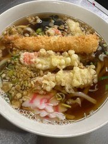
Makaron udon z chrupiącą smażoną potrawą w bulionie z płatkami bonito.
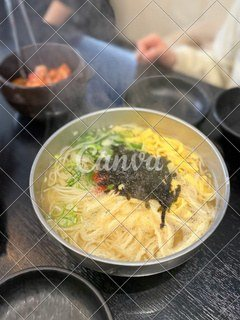
Makaron z mąki pszennej zawijany w bulionie z anchois.
Ostra zupa z pszenicznym makaronem, warzywami i jajkiem.
Pszeniczny makaron z sosem z pasty z czarnej fasoli, kawałkami wieprzowiny i warzywami.
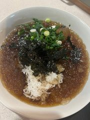
Zupa z zimnym czarnym gryczanym makaronem z warzywami i mięsem wołowym.
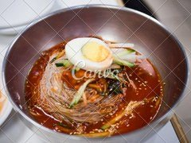
Zimny czarny gryczany makaron z warzywami, mięsem wołowym i ostrym sosem.
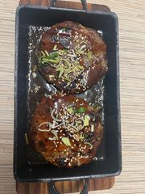
Zimna zupa z makaronem gryczanym i warzywami.
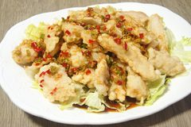
Bezkostne nóżki kurczaka smażone w pikantnym sosie. Podawane z kulkami ryżowymi.
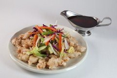
Słodko-kwaśna wieprzowina, smażona z warzywami.
Ostre smażone czosnkowe krewetki, imbir, sos sojowy.
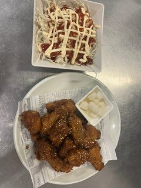
Smażony kurczak z chrupiącymi warzywami w kwaśnym sosie sojowym, zielona i czerwona papryka.
Smażona pierś kurczaka, imbir, sos sojowy.
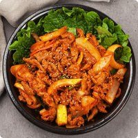
Smażona wieprzowina z ostrym sosem pasty gochujang.
*순살치킨가능 — boneless chicken available, dostępny kurczak bez kości
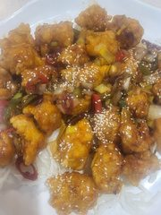
Smażone skrzydełka kurczaka, sałatka z ketchupem i majonezem.
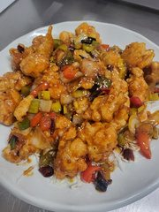
Koreańskie smażone skrzydełko kurczaka doprawione ostrym sosem sojowym, czosnkiem, cukrem.
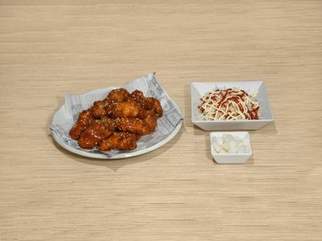
Kurczak doprawiony sosem słodko-ostrym, czosnkiem, cukrem i orzechami ziemnymi.
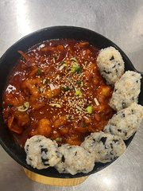
Skrzydełka kurczaka przyprawione miodem, czosnkiem, masłem i innymi przyprawami.
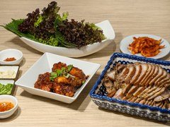
Duszone, przyprawione golonki z sosem sojowym.
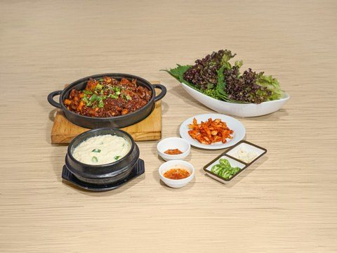
Duszona, sezonowana golonka wieprzowa z pikantnym sosem pastowym.
Miękkie, pikantne nóżki wieprzowe z chrupiącymi warzywami i pikantnym sosem musztardowym.
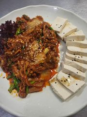
Pikantny gulasz na bazie sosu sojowego z dodatkiem żeberek wołowych.
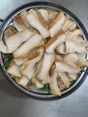
Gotowana karkówka wieprzowa na parze z grzybami i szczypiorkiem.
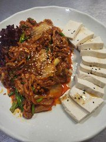
Tofu podawane razem ze smażoną wieprzowiną oraz smażonym kimchi.
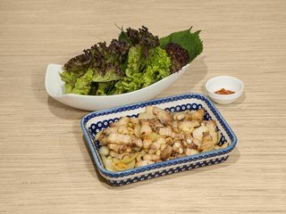
Smażone na grillu plastry boczku wieprzowego, z czosnkiem i cebulą.
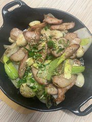
Smażone na grillu plastry karkówki wieprzowej, z czosnkiem i cebulą.
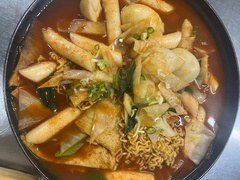
Ciasteczka ryżowe duszone z ostro-słodką pastą gochujang, warzywa, kotleciki rybne, jajka na twardo z miksem smażonych dodatków. Dodatki: 차돌 beef brisket / 치즈 cheese — +10 zł.
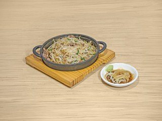
Smażone kiełki fasoli mung z mostkiem wołowym.
Gotowane ślimaki (zwójki) z warzywami, ostry sos z makaronem.
Jelita wieprzowe grillowane i podawane na gorącym talerzu.
Jelita wieprzowe grillowane z pikantnym sosem pastowym, podawane na gorącym talerzu.
Grillowany węgorz.
Smażona ośmiornica z ostrym sosem z pasty gochujang i syropem kukurydzianym.
Koreańska zupa z szyi wieprzowej, ziemniaki i warzywa.
Zupa z kotlecikami rybnymi.
Zupa z placków rybnych i golonki wołowej.
Ostra zupa z wieprzowiną, szynką, kiełbasą, czerwoną fasolą, kimchi, tofu i makaronem. *소자 Small — 90 zł.
Zupa z pasty sojowej z tofu, warzywami i mostkiem wołowym.
Bogata zupa z pasty sojowej z tofu, warzywami i mostkiem wołowym.
Zupa z koreańskiej kapusty pekińskiej kimchi z wołowiną.
Zupa z koreańską kaszanką oraz z podrobami wieprzowymi.
Pikantna zupa z grzybami i mostkiem wołowym.
Danie z bulionu z kości wołowych, zwane sujitang.
Pikantna zupa z owoców morza, wołowina z warzywami.
Gulasz z ośmiornicy, wołowych jelit i krewetek, doprawiony pikantnymi przyprawami.
Gulasz z ośmiornicy i delikatnej polędwicy wołowej jako głównych składników oraz różnych warzyw.
Pikantna zupa z jelita cienkiego krowy, przyprawami, warzywami, pszenicznym makaronem. *소자 Small — 130 zł.
Co najmniej 2 porcje, z wyjątkiem nr 75 (dostępne pojedyncze porcje)
Pokrojona wołowina, sos sojowy z warzywami i makaronem szklanym. Dostępne porcje pojedyncze.
Karkówka wieprzowa, grillowana.
Boczek wieprzowy.
Cienko pokrojony mrożony brzuch wieprzowy.
Plasterki mostka wołowego.
*탄산수 원하시면, 직원에게 알려주세요 — jeśli chcesz wodę gazowaną, poproś o nią pracownika obsługi.
Lech Premium lub Kozel Czarny.
Klasyczne soju.
Lemon juice, Jameson whisky, Schweppes.